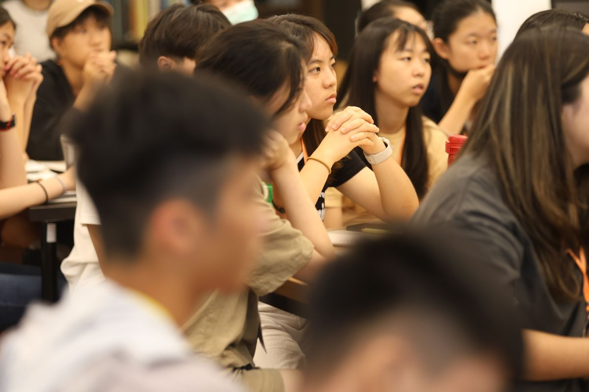
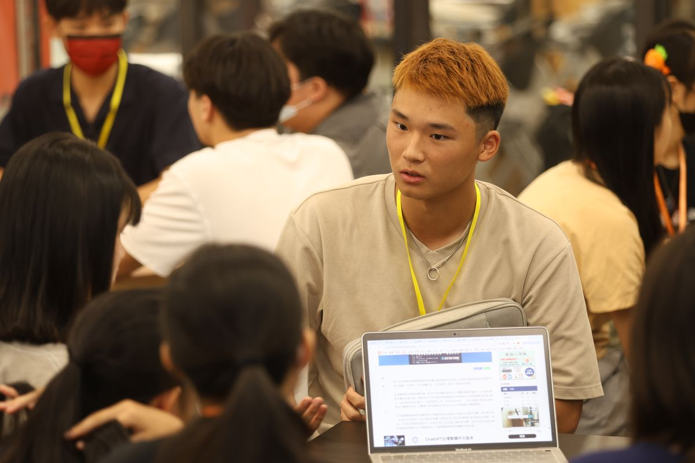
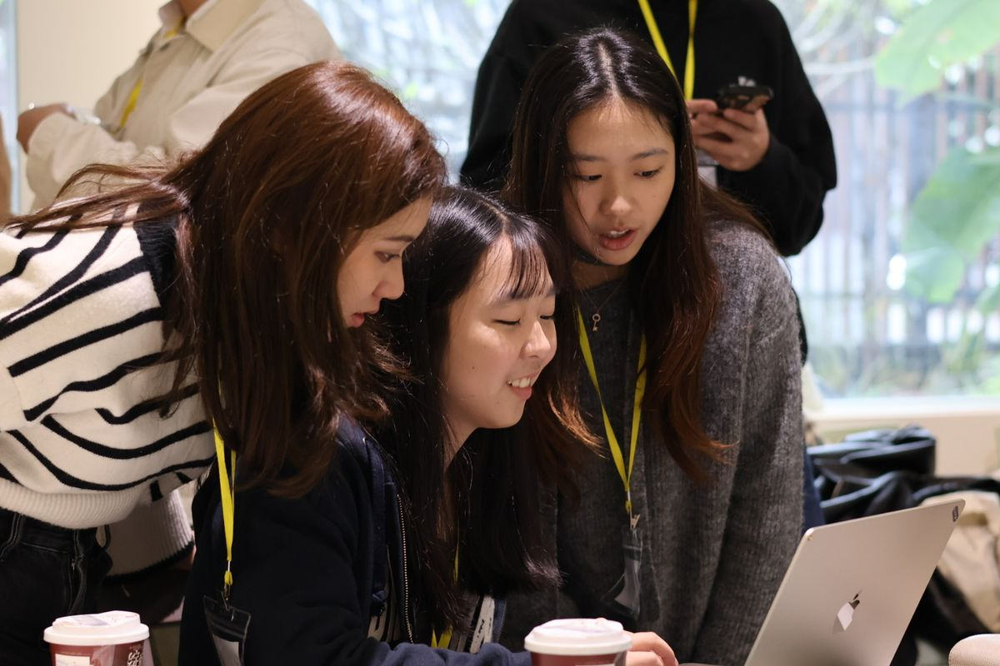
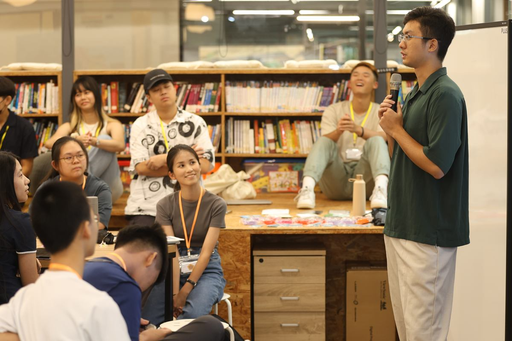
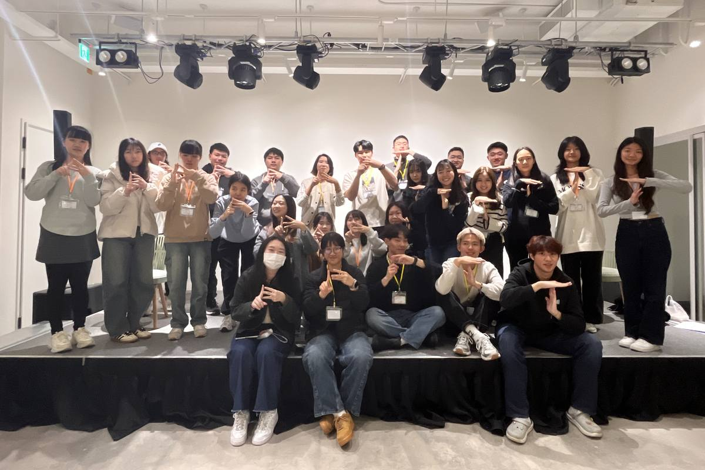

還有別條路，只是沒有人跟你說過。
Beyond Taiwan 是一群從台灣公立高中走出去的大學生。我們回來，把自己走過的路講給你聽。

我們為什麼在

在台灣，「出國念書」常被當成一件家裡有錢才能想的事。
這不完全是錯覺。留學代辦的費用不低，公立學校能給的海外升學資源，通常也比不上私立或國際學校。真正的問題不是錢而已，是資訊：你身邊如果沒有人走過，你連要問什麼都不知道。
於是很多人在還沒認真了解之前，就先把這個選項刪掉了。不是因為不適合，是因為沒有人告訴他這件事實際上長什麼樣子。
Beyond Taiwan 處理的就是這一段落差。我們幾乎所有活動都免費，導生配對計畫、探索營、講座，都不收費。我們沒辦法幫你做決定，但可以讓你在做決定之前，先知道自己有哪些選擇。
我們做什麼

探索營 College Bootcamp
每年寒暑假各一場，免費。兩天裡，你會看到學長姐當年真正送出去的申請文書，動手改一次自己的，再跟五、六位不同科系的人聊他們在國外的實際生活。我們會事先問你想讀什麼，再去找對應背景的人回來。
導生配對計畫 Mentorship Program
一學期配對一次。你會有一位走過同一條路的學長姐，他不會幫你寫 essay，但會陪你把卡住的地方講清楚。有些配對從申請季開始，到現在超過兩年還在聯絡。
誰在做這件事

Beyond Taiwan 現在有接近三十個人，全部是學生，分散在台灣、美國、加拿大、歐洲、澳洲、日本、韓國。
我們不是老師，也不是顧問。多數人只比你早走一兩步，有些人剛申請完不久，還記得那種不知道從哪裡開始的感覺。
從 2020 年五月開始，七個人，到現在五年。
數字
從 2020 年到現在，超過 250 位高中生在申請路上有人可以問。
一學期一次，配到就是一整個申請季有人陪。
探索營舉辦兩年，收到超過 150 份申請，協助超過 100 位國內高中生。
超過 20 位 BT 校友回來當講者。他們當年也是被這樣帶過來的。
成立五年，幹部全部是學生，分布七個國家。
幾乎所有活動都免費。
加入我們 / 聯絡

如果你是高中生
下一場探索營、下一輪導生配對，都會先在 Instagram 公布。追蹤 @beyondtaiwan，或直接私訊問我們，看到都會回。
如果你想贊助或合作
我們持續在找願意一起做這件事的個人、企業與學校。過去合作過的單位包括美國在臺協會 AIT、EducationUSA、TRÈS BON 好伴 café、臺北市立第一女子高級中學。
There are other paths. No one told you about them.
Beyond Taiwan is a group of students who came out of Taiwan's public high schools. We went looking, and we came back to tell you what we found.
Why we exist
In Taiwan, studying abroad is still widely treated as something only well-off families get to consider.
That impression is not baseless. Agency fees are high, and public schools rarely have the staff or resources to guide a student through an overseas application. But the harder barrier is information. If no one around you has done it, you do not even know what to ask.
So students rule the option out before they ever look into it. Not because it does not suit them, but because no one has shown them what it actually involves.
That gap is the reason Beyond Taiwan exists. Almost everything we run is free: mentorship, bootcamps, talks. We cannot make anyone's decision. We can make sure they know what they are choosing between.
What we do
College Bootcamp
Twice a year, winter and summer, free. Over two days you read the essays alumni actually submitted, rewrite one of your own, and talk with five or six people studying very different subjects about what their lives abroad are really like. We ask what you want to study before the camp, then bring back people with that background.
Mentorship Program
One matching round per semester. You are paired with someone who has been down the same road. They will not write your essay. They will sit with you until you can say out loud what you are stuck on. Some pairs that started in an application season are still in touch more than two years later.
Who runs this
Beyond Taiwan is close to thirty people, all of us students, spread across Taiwan, the United States, Canada, Europe, Australia, Japan and Korea.
We are not teachers and we are not consultants. Most of us are only a step or two ahead of you. Some finished their own applications recently enough to still remember not knowing where to start.
We began in May 2020 with seven people. Five years later, we are still here.
Numbers
Since 2020, more than 250 high school students have had someone to ask.
One matching round each semester. A match means company for a whole application season.
Two years of College Bootcamp, over 150 applications received, more than 100 students helped.
More than 20 Beyond Taiwan alumni have come back as speakers. They were once on the other side of the room.
Five years old. Every organizer is a student. Seven countries.
Almost everything we run costs nothing.
Get involved / Contact
If you are a high school student
The next College Bootcamp and the next mentorship round are announced on Instagram first. Follow @beyondtaiwan, or message us directly. We read everything.
If you want to support or partner with us
We are always looking for individuals, companies and schools willing to build this with us. Past partners include the American Institute in Taiwan, EducationUSA, TRÈS BON café, and Taipei First Girls' High School.
Write to us: beyondtaiwan2020@gmail.com